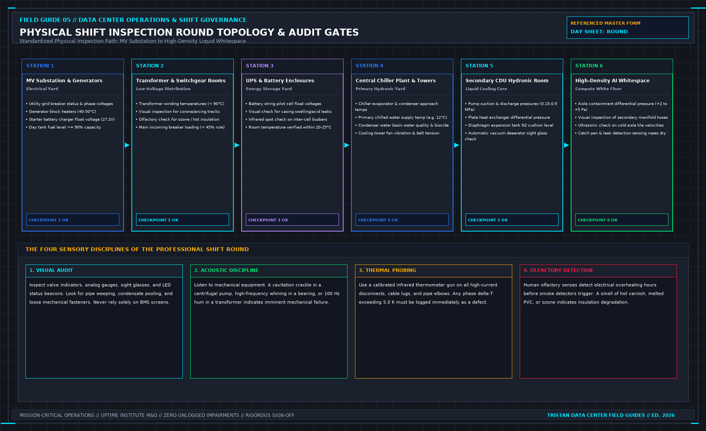

Do Not Start the Shift on a Dashboard: Paper-First Handover, Physical Rounds, and Why PUE Ratios Lie
Direct Answer Block: A data center shift manager must never start the shift by looking at a Building Management System (BMS) dashboard, a facility health score, or a Power Usage Effectiveness (PUE) ratio. Summary dashboards aggregate historical polling data and conceal stale sensors, active Lockout/Tagout (LOTO) isolations, and unstaffed emergency roles. Every shift must begin in deterministic order: first audit the physical handover logbook and active permits, second walk the physical plant stations, and third inspect raw telemetry points verified as live.

A wall-mounted NOC dashboard displaying a glowing 1.24 PUE and a 99.8% Health Score is an executive calculation about yesterday's telemetry tiles. It tells the incoming shift lead nothing about whether the facility will survive the next four hours.
To run a critical plant safely, the shift lead needs five concrete operational facts within the first fifteen minutes on site:
- Who is physically on shift—by individual name and switching qualification, never by a generic team alias that fails to answer a radio call.
- Which work permits and MOPs are authorized to open switchgear, isolate piping manifolds, or alter control logic today.
- Which abnormal plant states are already in force (such as a chiller locked out on LOTO or a UPS module in static bypass) so the team does not mistake a planned isolation for a sudden fault—or worse, close a breaker onto a locked-out bus.
- Which open defects and suppressed alarms the outgoing shift left unresolved.
- What physical boundaries the team will walk before trusting any remote screen.
None of those five facts exist inside a PUE gauge or a color-coded summary map.
1. The Mathematical Deception of Summary Ratios (PUE and Health Scores)
Facility dashboards love ratios because they compress thousands of physical variables into a single comforting number. Consider instantaneous Power Usage Effectiveness (PUE), which divides total facility input power by IT critical load power:
Here lies the operational trap: when a primary chilled water pump or centrifugal chiller trips offline, facility cooling power (Pcooling) drops instantly while IT server load (PIT) remains constant. For the first 10 to 15 minutes after a catastrophic cooling plant trip—before the thermal mass of the chilled water loop heats up enough to trigger high aisle temperature alarms—the dashboard's real-time PUE ratio actually improves (dropping, for example, from 1.28 down to 1.12). An operator trained to watch summary ratios sees the greenest efficiency number of the week during the exact minutes the cooling plant is coasting toward thermal runaway.
The same mathematical failure corrupts composite "Hall Health Percentages":
If a data hall has 500 monitored points—499 cabinet temperature sensors and 1 main redundant B-side feeder breaker status—and the B-side feeder breaker trips open while the hall remains cooled on the A-side feed, the Hall Health score reads 499 / 500 = 99.8% (Green). Managing a facility by the percentage of green tiles guarantees that the single point capable of killing the room is drowned out by 499 trivial sensors.
2. The Three-Phase Shift Startup Protocol
To prevent dashboard blindness, critical facility operations enforce a strict three-phase chronological startup gate. The screen is looked at last, never first.
| THE DETERMINISTIC SHIFT STARTUP SEQUENCE |
|---|
| PHASE 1: THE PAPERS (Minutes 00 - 20) |
| -> Verify named roster & switching authorizations (No "Team" aliases) |
| -> Audit LOTO logbook, active MOPs/SOPs, and open maintenance masks |
| -> Review open defects, abnormal line-ups, and outgoing shift sign-off |
| ↓ |
| PHASE 2: THE PHYSICAL WALK (Minutes 20 - 65) |
| -> Walk MV Substation, Generators, Chiller Plant, UPS/Battery, CDUs |
| -> Compare physical panel selectors (AUTO/HAND) against paper record |
| -> Inspect local analog gauges, sight glasses, and mechanical flags |
| ↓ |
| PHASE 3: THE QUALIFIED SCREEN (Minutes 65 - 80) |
| -> Audit only named boundary points with verified fresh clocks |
| -> Reconcile BMS active alarm suppression list against Phase 1 permits |
| -> Verify 2N power loading (<45%) and N+1 thermal reserve margins |
| Startup Phase | Primary Artifact Audited | Fatal Failure Prevented |
|---|---|---|
| Phase 1: The Papers | Shift Handover Sheet, LOTO Register, Permit-to-Work Log | Prevents unauthorized wrench work, orphaned LOTO locks, and unstaffed emergency switching roles. |
| Phase 2: The Physical Walk | Local control panels, mechanical sight glasses, breaker flags | Detects pumps left in HAND/OFF, oil/coolant weeps, and tripped breakers with failed auxiliary contacts. |
| Phase 3: The Qualified Screen | Raw BMS/EPMS point tables (with timestamp & quality bitmask) | Identifies stale/frozen sensors (Last Good Value traps) and unmasked alarm storms. |
3. Auditing the Shift Sheet Before Accepting Custody
When the incoming shift lead sits down with the outgoing lead, the conversation starts over the physical Shift Handover Sheet and Permit Register:
- Named Coverage Audit: Every mandatory operational role (First Responder, High-Voltage Authorized Person, Mechanical Lead, Incident Scribe) must have a specific human name and active radio channel assigned. If an outgoing sheet lists "Day Maintenance Team" as the emergency contact, the handover is rejected until a specific individual is named and verified on site.
- Abnormal State Register: Every valve not in its normal P&ID position, every breaker racked out or locked open, and every control loop placed in manual override must be listed on the Abnormal Line-Up Sheet. If Chiller 3 is isolated for condenser tube brushing, the incoming shift must know before walking into the plant why Chiller 3 is at 0kW and why its low-flow alarms are suppressed.
- Active Permit & MOP Reconciliation: Every open Permit-to-Work must have a hard expiration clock and a named point of no return. Permits do not roll over silently across shifts; the incoming lead must visually inspect the work site and re-sign the permit to extend custody.
4. When Ratios Are Permitted—and How to Report Them
Some colocation contracts and sustainability covenants require monthly or daily reporting of PUE, Water Usage Effectiveness (WUE), or renewable energy ratios. When a contract demands a ratio, calculate and report it later in the shift strictly according to the contract's cited standard (for example, ISO/IEC 30134-2 Category 2), explicitly listing which meters were included, whether any input meter went stale during the interval, and the exact calculation window.
Never allow a contractual efficiency ratio to become the opening operational sentence of the shift. At the end of a 12-hour shift, the shift manager must be able to stand in the corridor—with every monitor turned off—and state in one clear sentence which critical feeds are online, what physical margin remains if the largest single machine trips tonight, and which abnormal states are being handed to the next lead.
Frequently Asked Questions (FAQ)
Why can a data center PUE dashboard look healthiest right when a cooling failure begins?
Instantaneous PUE divides total facility power by IT load power. When a chiller, cooling tower fan, or primary chilled water pump trips offline, mechanical power consumption drops immediately while IT server power stays constant. Consequently, the PUE ratio drops toward 1.0 for several minutes until the thermal inertia of the water loop is exhausted and server inlet temperatures begin to climb.
What should an incoming shift manager do if the outgoing lead attempts to conduct handover purely from the BMS workstation?
The incoming shift manager must pause the handover and require a joint review of the physical LOTO logbook, active MOP permits, and abnormal line-up register, followed by a physical walkthrough of any plant room where switching or maintenance occurred during the prior shift. Signing a handover based solely on screen tiles transfers liability for unlogged physical defects to the incoming lead.
How do you determine which BMS points "have earned the right to speak" during Phase 3 of shift startup?
A telemetry point has earned the right to be trusted for operational decisions only if it possesses four verified attributes: (1) a calibrated physical sensor ID traced to the P&ID/SLD, (2) a live measurement timestamp within the expected polling interval, (3) an active GOOD (0x00) quality bitmask that fails to STALE/BAD when disconnected, and (4) a witnessed forced-failure commissioning record.
From Run the Data Center Day, Tristan, Data Center Field Guides.
Related: A nameplate is not capacity.
Master the Complete Protocol: Run the Data Center Day: What the Manager Must Sign Before the Shift Ends
2N Redundancy Mathematics, 6 Inspection Stations, Shift Handovers, and SOP/MOP/EOP Protocols
Stop relying on contractor spreadsheets and vendor marketing claims. This field guide provides the complete, auditable verification binder—including physical equations, inspection stations, acceptance thresholds, and signed refusal templates.